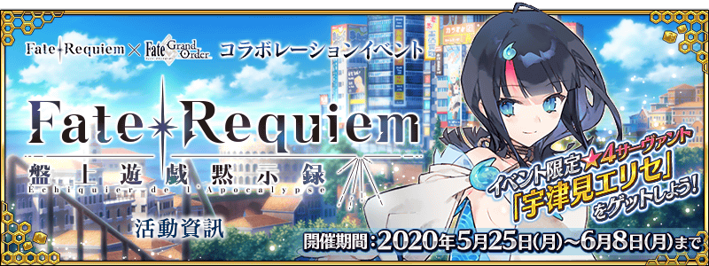
本頁面資訊僅供參考，實際情況請以遊戲內資料為準。
由於直接使用官方翻譯，可能會與其他站內翻譯相異，敬請見諒。
其他公告內容請參照日版當時公告翻譯。

- 活動限定效果
-
活動限定效果 
フェア・ゲーマー EX  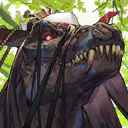
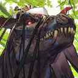
自身在「『Fate/Requiem』盤上遊戲默示錄」中的攻擊威力提升100%
＆通過關卡時獲得的絆增加50%フェア・ゲーマー A 


自身在「『Fate/Requiem』盤上遊戲默示錄」中的攻擊威力提升50%
＆通過關卡時獲得的絆增加20%
自身在「『Fate/Requiem』盤上遊戲默示錄」中的攻擊威力提升50%
＋ 我方全體＜含候補＞在通過「『Fate/Requiem』盤上遊戲默示錄」關卡時獲得的絆提升5%(支援時無效)フェア・ゲーマー B 


自身在「『Fate/Requiem』盤上遊戲默示錄」中的攻擊威力提升30%
＆通過關卡時獲得的絆增加20%
生命計數器的掉落獲得數增加1個(最大解放:2個) 分數寶石的掉落獲得數增加1個(最大解放:2個) 房屋標誌的掉落獲得數增加1個(最大解放:2個) 
在「『Fate/Requiem』盤上遊戲默示錄」中，攻擊威力提升100%(最大解放:200%)
採用GoogleDrive資料夾呈現
| 任務 | 獎勵 | 解鎖條件 |
|---|---|---|
| No.1 靠大富翁獲得1個「籌碼」 | 1m | 5/25 19:00後 |
| No.2 靠大富翁獲得5個「籌碼」 | 4k | 達成：No.1 |
| No.3 靠大富翁獲得10個「籌碼」 | 6k | 達成：No.2 |
| No.4 靠大富翁獲得20個「籌碼」 | 達成：No.3 | |
| No.5 靠大富翁獲得30個「籌碼」 | 達成：No.4 | |
| No.6 在大富翁使用1次「普通骰子」 | 5/25 19:00後 | |
| No.7 在大富翁累計使用3次「普通骰子」 | 5 | 達成：No.6 |
| No.8 在大富翁累計使用6次「普通骰子」 | 達成：No.7 | |
| No.9 在大富翁累計使用10次「普通骰子」 | 5m | 達成：No.8 |
| No.10 在大富翁累計使用3次「123骰子」或「456骰子」 | 5 | 5/25 19:00後 |
| No.11 在大富翁累計使用6次「123骰子」或「456骰子」 | 3m | 達成：No.10 |
| No.12 在大富翁累計使用10次「123骰子」或「456骰子」 | 200 | 達成：No.11 |
| No.13 在大富翁累計使用3次「純1骰子」或「純2骰子」或「純3骰子」 | 3m | 5/25 19:00後 |
| No.14 在大富翁累計使用6次「純1骰子」或「純2骰子」或「純3骰子」 | 5 | 達成：No.13 |
| No.15 在大富翁累計使用10次「純1骰子」或「純2骰子」或「純3骰子」 | 200 | 達成：No.14 |
| No.16 在大富翁前進合計20格 | 5/25 19:00後 | |
| No.17 在大富翁前進合計50格 | 達成：No.16 | |
| No.18 在大富翁前進合計100格 | 達成：No.17 | |
| No.19 在大富翁前進合計150格 | 200 | 達成：No.18 |
| No.20 通過1次加成關卡 | 2m | 5/25 19:00後 |
| No.21 合計通過5次加成關卡 | 達成：No.20 | |
| No.22 合計通過10次加成關卡 | 達成：No.21 | |
| No.23 合計通過15次加成關卡 | 達成：No.22 | |
| No.24 靠戰利品累計獲得400個『房屋標誌』 | 5 | 5/25 19:00後 |
| No.25 靠戰利品累計獲得400個『分數寶石』 | 5 | 5/25 19:00後 |
| No.26 靠戰利品累計獲得400個『生命計數器』 | 5/25 19:00後 | |
| No.27 將『宇津見繪里世』編入隊伍，通過5次關卡 | 在『宇津見繪里世』暫時加入後開放 通過：第５のゲーム(7/8) | |
| No.28 『宇津見繪里世』的靈機再臨到達第3階段 | 5 | 在『宇津見繪里世』暫時加入後開放 通過：第５のゲーム(7/8) |
| No.29 『宇津見繪里世』的絆等級到達3 | 5m | 在『宇津見繪里世』暫時加入後開放 通過：第５のゲーム(7/8) |
| No.30 通過所有的任務 | 5/25 19:00後 |
| 生命計數器 | |||
|---|---|---|---|
| 交換物 | 需求數 | 限制 | 共需 |
| 200 | 2 | 400 | |
| 200 | 2 | 400 | |
| 200 | 2 | 400 | |
| 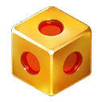 | 50 | 10 | 500 |
| 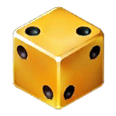 | 40 | 10 | 400 |
| 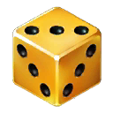 | 30 | 10 | 300 |
| 100 | 1 | 100 | |
| 40 | 10 | 400 | |
| 30 | 20 | 600 | |
| 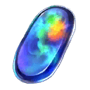 | 20 | 20 | 400 |
| 20 | 20 | 400 | |
| 20 | 20 | 400 | |
| 20 | 20 | 400 | |
| 3 | 0 | 0 | |
| 合計 | 5,100 | ||
| 分數寶石 | |||
|---|---|---|---|
| 交換物 | 需求數 | 限制 | 共需 |
| 200 | 1 | 200 | |
| 200 | 1 | 200 | |
| 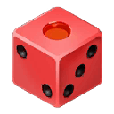 | 30 | 20 | 600 |
| 100 | 1 | 100 | |
| 40 | 10 | 400 | |
| 25 | 20 | 500 | |
| 20 | 20 | 400 | |
| 20 | 20 | 400 | |
| 20 | 20 | 400 | |
| 20 | 20 | 400 | |
| 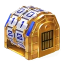 | 10 | 0 | 0 |
| 合計 | 3,600 | ||
| 房屋標誌 | |||
|---|---|---|---|
| 交換物 | 需求數 | 限制 | 共需 |
| 200 | 1 | 200 | |
| 200 | 1 | 200 | |
| 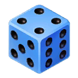 | 30 | 20 | 600 |
| 20 | 20 | 400 | |
| 20 | 20 | 400 | |
| 6 | 100 | 600 | |
| 3 | 100 | 300 | |
| 20 | 20 | 400 | |
| 20 | 20 | 400 | |
| 15 | 30 | 450 | |
| 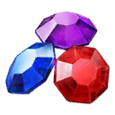 | 10 | 0 | 0 |
| 合計 | 3,950 | ||
| 骰子 | |||
|---|---|---|---|
| 交換物 | 需求數 | 限制 | 共需 |
| 3 | 0 | 0 | |